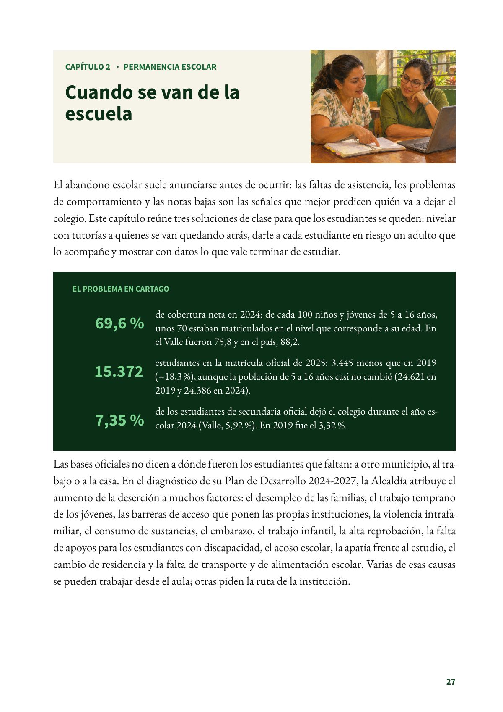
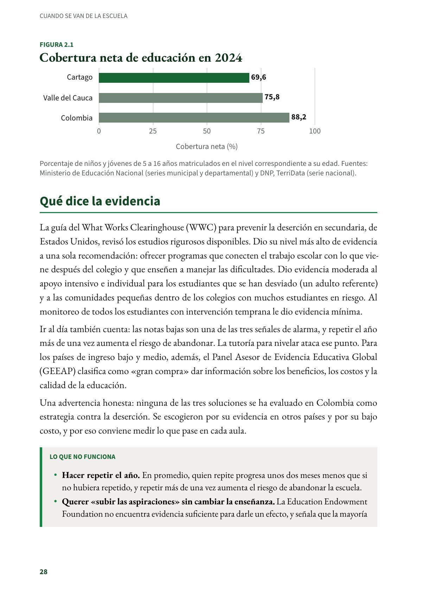
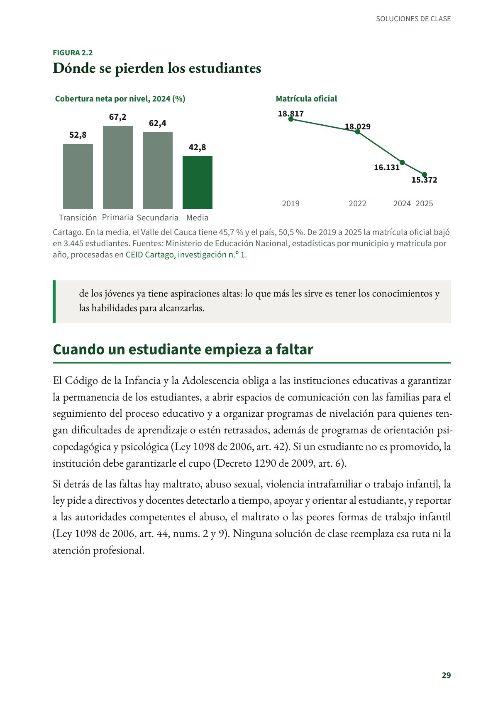

Cuando se van de la escuela
El abandono escolar suele anunciarse antes de ocurrir.
PDF · 4 págs. · 807 KBEl abandono escolar suele anunciarse antes de ocurrir: las faltas de asistencia, los problemas de comportamiento y las notas bajas son las señales que mejor predicen quién va a dejar el colegio. Este capítulo reúne tres soluciones de clase para que los estudiantes se queden: nivelar con tutorías a quienes se van quedando atrás, darle a cada estudiante en riesgo un adulto que lo acompañe y mostrar con datos lo que vale terminar de estudiar.
El problema en Cartago
- 69,6 % de cobertura neta en 2024: de cada 100 niños y jóvenes de 5 a 16 años, unos 70 estaban matriculados en el nivel que corresponde a su edad. En el Valle fueron 75,8 y en el país, 88,2.
- 15.372 estudiantes en la matrícula oficial de 2025: 3.445 menos que en 2019 (−18,3 %), aunque la población de 5 a 16 años casi no cambió (24.621 en 2019 y 24.386 en 2024).
- 7,35 % de los estudiantes de secundaria oficial dejó el colegio durante el año escolar 2024 (Valle, 5,92 %). En 2019 fue el 3,32 %.
Las bases oficiales no dicen a dónde fueron los estudiantes que faltan: a otro municipio, al trabajo o a la casa. En el diagnóstico de su Plan de Desarrollo 2024-2027, la Alcaldía atribuye el aumento de la deserción a muchos factores: el desempleo de las familias, el trabajo temprano de los jóvenes, las barreras de acceso que ponen las propias instituciones, la violencia intrafamiliar, el consumo de sustancias, el embarazo, el trabajo infantil, la alta reprobación, la falta de apoyos para los estudiantes con discapacidad, el acoso escolar, la apatía frente al estudio, el cambio de residencia y la falta de transporte y de alimentación escolar. Varias de esas causas se pueden trabajar desde el aula; otras piden la ruta de la institución.
Qué dice la evidencia
La guía del What Works Clearinghouse (WWC) para prevenir la deserción en secundaria, de Estados Unidos, revisó los estudios rigurosos disponibles. Dio su nivel más alto de evidencia a una sola recomendación: ofrecer programas que conecten el trabajo escolar con lo que viene después del colegio y que enseñen a manejar las dificultades. Dio evidencia moderada al apoyo intensivo e individual para los estudiantes que se han desviado (un adulto referente) y a las comunidades pequeñas dentro de los colegios con muchos estudiantes en riesgo. Al monitoreo de todos los estudiantes con intervención temprana le dio evidencia mínima.
Ir al día también cuenta: las notas bajas son una de las tres señales de alarma, y repetir el año más de una vez aumenta el riesgo de abandonar. La tutoría para nivelar ataca ese punto. Para los países de ingreso bajo y medio, además, el Panel Asesor de Evidencia Educativa Global (GEEAP) clasifica como «gran compra» dar información sobre los beneficios, los costos y la calidad de la educación.
Una advertencia honesta: ninguna de las tres soluciones se ha evaluado en Colombia como estrategia contra la deserción. Se escogieron por su evidencia en otros países y por su bajo costo, y por eso conviene medir lo que pase en cada aula.
Lo que no funciona
- Hacer repetir el año. En promedio, quien repite progresa unos dos meses menos que si no hubiera repetido, y repetir más de una vez aumenta el riesgo de abandonar la escuela.
- Querer «subir las aspiraciones» sin cambiar la enseñanza. La Education Endowment Foundation no encuentra evidencia suficiente para darle un efecto, y señala que la mayoría de los jóvenes ya tiene aspiraciones altas: lo que más les sirve es tener los conocimientos y las habilidades para alcanzarlas.
Cuando un estudiante empieza a faltar
El Código de la Infancia y la Adolescencia obliga a las instituciones educativas a garantizar la permanencia de los estudiantes, a abrir espacios de comunicación con las familias para el seguimiento del proceso educativo y a organizar programas de nivelación para quienes tengan dificultades de aprendizaje o estén retrasados, además de programas de orientación psicopedagógica y psicológica (Ley 1098 de 2006, art. 42). Si un estudiante no es promovido, la institución debe garantizarle el cupo (Decreto 1290 de 2009, art. 6).
Si detrás de las faltas hay maltrato, abuso sexual, violencia intrafamiliar o trabajo infantil, la ley pide a directivos y docentes detectarlo a tiempo, apoyar y orientar al estudiante, y reportar a las autoridades competentes el abuso, el maltrato o las peores formas de trabajo infantil (Ley 1098 de 2006, art. 44, nums. 2 y 9). Ninguna solución de clase reemplaza esa ruta ni la atención profesional.
Fuentes del capítulo
Fuentes
Alcaldía de Cartago. (2024). Diagnóstico sectorial: Plan de Desarrollo Territorial 2024-2027 «Más progreso, mejor futuro» (Anexo 1), p. 57. cartago.gov.co
Centro de Estudios e Investigaciones Docentes Cartago. (2026). Radiografía de la educación pública en Cartago: lo que dicen los datos oficiales (2026) (Investigaciones del CEID, n.º 1). Subdirectiva SUTEV Cartago. doi.org
Congreso de la República de Colombia. (2006). Ley 1098 de 2006, por la cual se expide el Código de la Infancia y la Adolescencia, arts. 42 y 44. secretariasenado.gov.co
Departamento Nacional de Planeación. (2026). TerriData: cobertura neta en educación, total (serie 4/1/12, Colombia). terridata.dnp.gov.co
Education Endowment Foundation. (s. f.). Aspiration interventions; Repeating a year. Teaching and Learning Toolkit. educationendowmentfoundation.org.uk
Presidencia de la República de Colombia. (2009). Decreto 1290 de 2009, por el cual se reglamenta la evaluación del aprendizaje y promoción de los estudiantes de los niveles de educación básica y media. mineducacion.gov.co
Ministerio de Educación Nacional. (2025a). Estadísticas en educación en preescolar, básica y media por departamento [Conjunto de datos]. Datos Abiertos Colombia. datos.gov.co
Ministerio de Educación Nacional. (2025b). Estadísticas en educación en preescolar, básica y media por municipio [Conjunto de datos]. Datos Abiertos Colombia. datos.gov.co
Ministerio de Educación Nacional. (2026). Matrícula en educación en preescolar, básica y media [Conjunto de datos]. Datos Abiertos Colombia. datos.gov.co
What Works Clearinghouse. (2017). Preventing dropout in secondary schools [Guía de prácticas]. Institute of Education Sciences. ies.ed.gov
Así se ve en el libro
4 páginas

